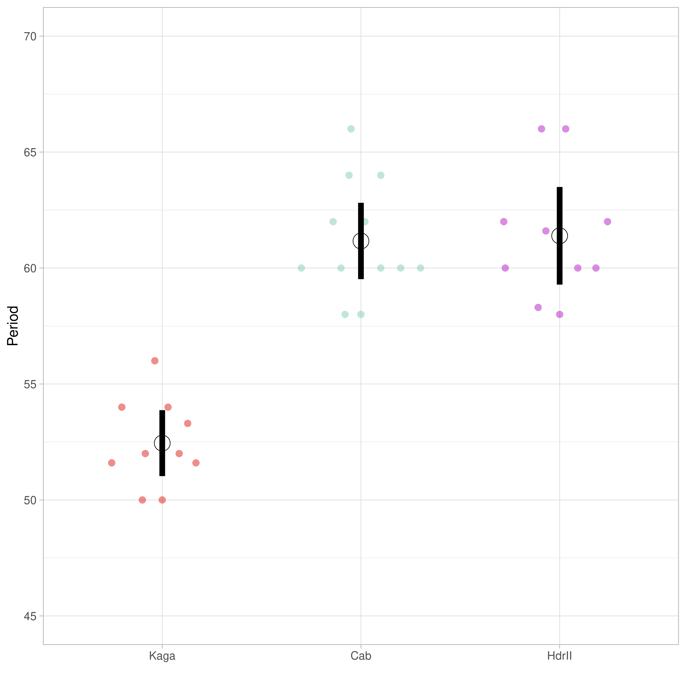

1 Background
Somites are the earliest primitive segmental structures that form from presomatic mesoderm cells (PSM) in the embryo (Kim et al. 2011), later differentiating into vertebrae, ribs, and skeletal muscles. Somite formation occurs rhythmically and sequentially, with the time between the formation of each pair of somites referred to as the “period”. The period of somite formation varies greatly between species (Matsuda et al. 2020), and is controlled by a molecular oscillator, known as the ‘segmentation clock’, which drives waves of gene expression in developmental pathways.
It is not fully understood how the phase waves of the segmentation clock are initially established (Falk et al. 2022). To identify the genetic basis of these phase waves, Carina Vibe in Alexander Aulehla’s group at EMBL-Heidelberg used a CRISPR-Cas9 knock-in approach (Seleit, Aulehla, and Paix 2021) to establish a medaka Cab strain with an endogenous, fluorescing reporter gene (Her7-Venus) for the oscillation signalling pathway. This method allows the Aulehla Group to image somite formation and extract quantitative measures for segmentation clock dynamics. They determined that the southern Japanese Cab strain and the northern Japanese Kaga strain have divergent somite periodicity, where Kaga’s tends to be faster, and Cab’s slower (Figure 1.1), and selected them as the parental strains in an F2-cross. This notebook sets out the bioinformatic analyses involved in this project to identify the genetic variations associated with differences in somite periodicity.